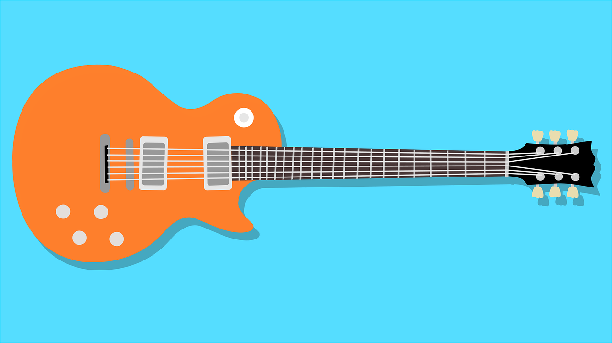
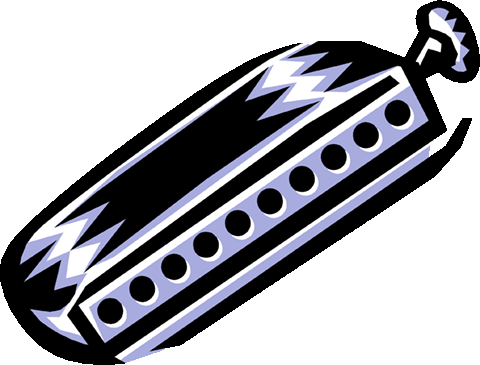

Descubra o artista em você!
A Music For All oferece cursos completos de violão, guitarra e gaita; instrumentos de ótima qualidade a disposição dos alunos, para que você possa tocar aquela música que sempre sonhou!

Nossos cursos
Violão
O violão é um dos instrumentos mais populares e bonitos que existem.
Além disso é barato, fácil de transportar e ainda faz o maior sucesso em uma roda de amigos!
Guitarra
Aprenda guitarra com o melhor método que você ira encontrar e esqueça de uma vez por todas os vídeos aleatórios do YouTube.
Gaita
Aprenda a tocar o instrumento mais charmoso e requisitado do blues e do velho oeste.
Quais os beneficícios de tocar violão, guitarra ou gaita?
- Melhora a memória.
- Beneficia a coordenação motora.
- Aumenta a capacidade de trabalhar em equipe.
- Melhora a concentração.
- Combate a timidez.
- Alivia o estresse, a depressão e a ansiedade.
- Instrumentos relativamente baratos.
- Tocar gaita ajuda pacientes com doenças pulmonares.